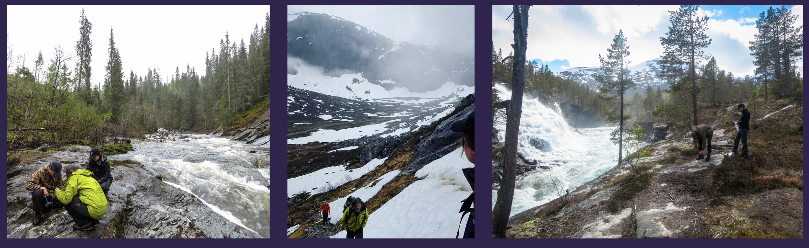
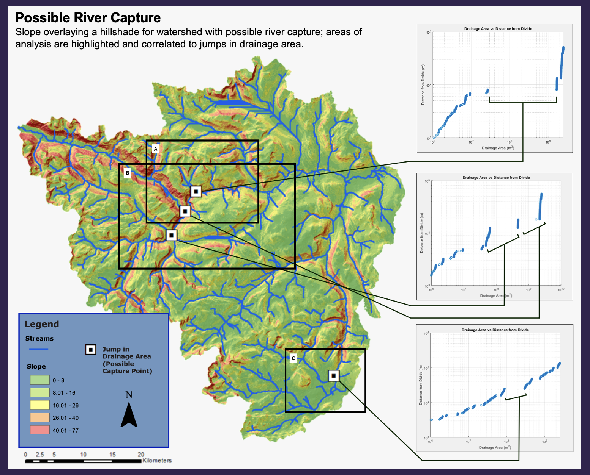

Fluvial Geomorphology
For over 2.5 years, I conducted fluvial geomorphology research in southwestern Norway that focused on analyzing rivers and watersheds to answer the question of whether active fault rejuvenation was taking place within the region. This project, under the direction of Dr. Jeni McDermott, utilized computational methods of analysis that involved GIS, Matlab programming, and Google Earth, which ultimately supplemented a field season in Norway. For this project, I wrote three different grant proposals that were successfully funded by the University of St. Thomas Grants and Research Office and funded me throughout my entire time as a research assistant. I also contributed to developing a new method for locating areas of river capture and drainage reorganization utilizing ArcGIS and Matlab which I presented at the Geological Society of America’s 2017 Annual Meeting in Seattle, Washington.
Project Links:
- GSA Abstract
- GSA: Using Drainage Area Power-Laws as a Method to Test for Points of River Capture
- Inquiry at UST: Using Drainage Area Power-Laws as a Method to Test for Points of River Capture
- Inquiry at UST: Using Erosion Rates to Interpret the Evolution of the Southwestern Norwegian ‘Passive’ Margin
- Inquiry at UST: Determining Uplift In the Surnadal River Valley through Cosmogenic Nuclide Dating and the Stream Power Model